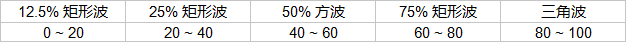

| 文件名 | 插件 | 插件平台 | 说明与发生器规则 |
支持的音符属性; 事件或自动化 ♫ 在音符中有效 ◢ 可以在音符中滑行 ● 支持事件或 MIDI 控制器 ☍ 支持 FL Studio 自动控制剪辑 |
|---|---|---|---|---|
| 2A03.fst | Sytrus | FLi/VSTi |
模拟 2A03 芯片 12.5% 矩形波; 25% 矩形波; 50% 方波; 三角波. ■ 音量 / 音高包络调整分别位于 OP 1 ~ OP 4 ---> VOL / PITCH ---> ENV. ■ OP 4 为三角波发生器, 不允许调节音量包络. 若三角波作为独立通道, 则只能调节插件主控音量. ■ OP 5 为调制器, 不允许调整音量 / 音高包络. ■ 75% 矩形波的音色与 25% 矩形波相同, 因此预置不集成. ■ 占空比 / 波形与 MOD X 旋钮值范围的关系: 
|
音符力度 ♫ ◢ 音符音高 ♫ ◢ 通道音量 ● ☍ 通道音高 ● ☍ MOD X (占空比 / 音色切换) ● ☍ MOD Y (Vibrato 效果) ● ☍ |
| 2A03 (Oversampling).fst | Sytrus | FLi/VSTi |
模拟 2A03 芯片 12.5% 矩形波; 25% 矩形波; 50% 方波; 75% 矩形波; 三角波. 与 2A03.fst 的不同: ■ 全局使用 Oversampling, 避免了滑音过程中丢失谐波; ■ 将原生三角波发送到 WS 进行实时合成; ■ 添加了 75% 矩形波. ----------------- ■ 音量 / 音高包络调整分别位于 OP 1 ~ OP 4 ---> VOL / PITCH ---> ENV. ■ OP 5 为三角波发生器, 不允许调节音量包络. 若三角波作为独立通道, 则只能调节插件主控音量. ■ OP 6 为调制器, 不允许调整音量 / 音高包络. ■ 占空比 / 波形与 MOD X 旋钮值范围的关系:  |
音符力度 ♫ ◢ 音符音高 ♫ ◢ 通道音量 ● ☍ 通道音高 ● ☍ MOD X (占空比 / 音色切换) ● ☍ MOD Y (Vibrato 效果) ● ☍ |
| Noise L (Old, Effectot + WS).fst |
Patcher Envelope Controller Sytrus Effector WaveShaper |
FLi FLi FLi/VSTi FLe FLe |
模拟 2A03 芯片噪波 (long cycle 类型). ■ 由于 Envelope Controller 的一个已知问题, Noise 音色使用音符触发时于起始瞬间会残留少许上一个键位遗留的效果 (力度和频率). 此问题的演示详见 envcprbl.flp. 此问题目前没有很好的方法解决. ■ Sytrus 在 Patcher 中作为白噪发生器. 与 2A03 芯片的噪波发生器不同的是 Sytrus 产生的噪波完全随机, 因此不会出现 2A03 噪波发生器中重复片段的现象. ■ 此预置不允许使用任何包络或滑行属性. ■ 此预置无法正确响应长度小于 1/8 步的音符. ■ 此预置存在的问题较多且难以修复, 现已不推荐使用. |
音符力度 ♫ ◢ 音符音高 ♫ ◢ 通道音量 ● ☍ 通道音高 ● ☍ |
| Noise L (Sytrus x16 in Patcher).fst |
Patcher Sytrus |
FLi FLi/VSTi |
模拟 2A03 芯片噪波 (long cycle 类型, 32767 个采样点). ■ 定义波形的矫音器位于 FILT 1 ---> WS. ■ 定义音量包络的矫音器位于 FILT 2 ---> VOL ---> ENV. ■ 定义音高包络的矫音器位于 OP 1 ---> PITCH ---> ENV. ■ 为了在每首歌曲中产生听觉上的差异, 用户需要创建不同的噪波外形. 可以使用 MML2FNV 完成需求. ■ 该预置包含 16 个 Sytrus 的设置, 上述调整需分别为这些插件设置. |
音符力度 ♫ ◢ 音符音高 ♫ ◢ 通道音量 ● ☍ 通道音高 ● ☍ |
| Noise S (Sytrus x16 in Patcher).fst |
Patcher Sytrus |
FLi FLi/VSTi |
模拟 2A03 芯片噪波 (short cycle 类型, 93 个采样点). ■ 定义波形的矫音器位于 FILT 1 ---> WS. ■ 定义音量包络的矫音器位于 FILT 2 ---> VOL ---> ENV. ■ 定义音高包络的矫音器位于 OP 1 ---> PITCH ---> ENV. ■ 为了在每首歌曲中产生听觉上的差异, 用户需要创建不同的噪波外形. 可以使用 MML2FNV 完成需求. ■ 该预置包含 16 个 Sytrus 的设置, 上述调整需分别为这些插件设置. |
音符力度 ♫ ◢ 音符音高 ♫ ◢ 通道音量 ● ☍ 通道音高 ● ☍ |
| Noise L (Free).fst |
Sytrus |
FLi/VSTi |
模拟 2A03 芯片噪波 (long cycle 类型, 32767 个采样点). ■ 定义波形的矫音器位于 FILT 1 ---> WS. ■ 定义音量包络的矫音器位于 FILT 2 ---> VOL ---> ENV. ■ 定义音高包络的矫音器位于 OP 1 ---> PITCH ---> ENV. ■ 为了在每首歌曲中产生听觉上的差异, 用户需要创建不同的噪波外形. 可以使用 MML2FNV 完成需求. ■ 此预置适用于需要手动滑音的场合, 频率与键位相关映射见 "噪波预置键位; 音高与事件编辑器对照表". |
音符力度 ♫ ◢ 音符音高 ♫ ◢ 通道音量 ● ☍ 通道音高 ● ☍ |
| Noise S (Free).fst | Sytrus | FLi/VSTi |
模拟 2A03 芯片噪波 (short cycle 类型, 93 个采样点). ■ 定义波形的矫音器位于 FILT 1 ---> WS. ■ 定义音量包络的矫音器位于 FILT 2 ---> VOL ---> ENV. ■ 定义音高包络的矫音器位于 OP 1 ---> PITCH ---> ENV. ■ 为了在每首歌曲中产生听觉上的差异, 用户需要创建不同的噪波外形. 可以使用 MML2FNV 完成需求. ■ 此预置适用于需要手动滑音的场合, 频率与键位相关映射见 "噪波预置键位; 音高与事件编辑器对照表". |
音符力度 ♫ ◢ 音符音高 ♫ ◢ 通道音量 ● ☍ 通道音高 ● ☍ |
| DPCM.fst | FPC | FLi |
组合用户导入的 DPCM 采样. ■ 每个鼓垫可以导入多个采样, 请注意调整鼓垫音量. ■ 模拟 DPCM Delta 计数器效果请在本预置中添加 DeltaAC.wav. |
音符微调音高 ♫ 通道音量 ● ☍ 通道音高 ● ☍ |
| DPCM 2.fst | DirectWave | FLi/VSTi |
组合用户导入的 DPCM 采样. 与 DPCM.fst 的不同: ■ 支持循环标记 ■ 减少高频损失 ■ 支持限制最大复音数 (需要使用 Delta 计数器效果的, 则设置最大复音数为 2) ----------------- ■ 每个键位可以导入多个采样, 但为了后期修改, 建议每个采样只覆盖 1 个键位. 请注意单独调整采样音量. ■ DPCM Delta 计数器效果已位于 C#5 预置. |
音符微调音高 ♫ 音符音高 ♫ ◢ 通道音量 ● ☍ 通道音高 ● ☍ |
|
Free PWM.fst Namco 163 PWM.fst FDS PWM.fst |
Sytrus | FLi/VSTi |
允许无级 / 16 / 32 级 (外形的 50%) 相位调节矩形波的占空比. ■ 音量 / 音高包络调整分别位于 OP 1 ~ OP 2 ---> VOL / PITCH ---> ENV. ■ OP 3 为调制器, 不允许调整音量 / 音高包络. 兼容 Konami VRC6 矩形波 / 方波音色. |
音符力度 ♫ ◢ 音符音高 ♫ ◢ 通道音量 ● ☍ 通道音高 ● ☍ MOD X (占空比切换) ● ☍ MOD Y (Vibrato 效果) ● ☍ |
|
FDS & N163 MML2FNV.fst |
Sytrus | FLi/VSTi |
通过 MML2FNV 导入波形, 以模拟 N163 & FDS 芯片任意波形音色. ■ 定义波形的矫音器位于 FILT 1 ---> WS. ■ 定义音量包络的矫音器位于 FILT 2 ---> VOL ---> ENV. ■ 定义音高包络的矫音器位于 OP 1 ---> PITCH ---> ENV. 兼容 Konami VRC6 矩形波 / 方波 / 锯齿波音色. |
音符力度 ♫ ◢ 音符音高 ♫ ◢ 通道音量 ● ☍ 通道音高 ● ☍ MOD Y (Vibrato 效果) ● ☍ |
|
Sunsoft 2\Sunsoft.fst |
DirectWave | FLi/VSTi |
模拟 Sunsoft 风格 BASS 音色 (DPCM, 支持循环标记). ■ 微调采样音高的参数位于 ZONE ---> Pitch Tune (1 半音 = 100 Cents) |
音符力度 (不推荐) ♫ ◢ 音符音高 ♫ ◢ 通道音量 ● ☍ 通道音高 ● ☍ |
|
Solutions\Event Snap\16 steps.png Solutions\Event Snap\32 steps.png Solutions\Event Snap\64 steps.png Solutions\Event Snap\96 steps - C.png Solutions\Event Snap\128 steps.png Solutions\Event Snap\256 steps - C.png |
Fruity Dance | FLi |
模拟 MML 并使量化值与事件编辑器的栅格显示对齐. ■ 不同的动作表将决定 "跳舞动作" 拥有不同的量化值. ■ "跳舞动作" 将不显示任何有效动画. ■ 在 FL Studio 中与事件编辑器的栅格显示对齐, 例如音量 MML 的量化范围为 0 ~ 15, 则事件编辑器中将始终得到 0 ~ 16. |